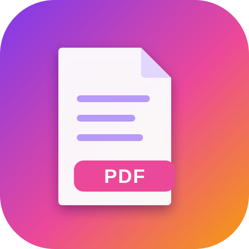

WebyPDF needs JavaScript to work with your PDFs locally in the browser.
iPhone / iPad (Safari): tap the Share button, then Add to Home Screen.
Android / Chrome / Edge: open the browser menu and choose Install app (or Add to Home screen).
Desktop: click the install icon in the address bar.